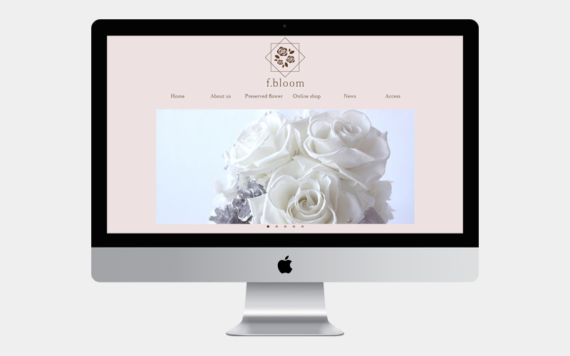

f.bloom（架空サイト）
- 概要
- 職業訓練校の課題として、プリザーブドフラワー専門店「f.bloom」（架空店舗）のリニューアルに伴うweb サイト制作。
- 今年、先代から二代目に代替わりをし、生花販売をやめ、 ラウンジスペースを併設したプリザーブドフラワー専門店に。 店舗改装、販売商品変更に伴うリニューアル。
- クライアントからの要望
- シンプルで、日常のほんの少しの高級感を感じられるような 雰囲気がほしい。従来の生花販売との違いを出せればなおいい。
- サイト制作の目的
-
・生花店からプリザーブドフラワー店にリニューアルオープンしたことを知らせるため。
・オンラインショップの売り上げ安定化。 - ターゲット
-
20代後半〜30代女性
→プリザーブドフラワーは自分用よりもプレゼントとして買うことが多いと考え、お祝いの機会も増える20代後半〜30代女性をメインターゲットに設定しました。 - デザインに関して
- 大人の女性を意識した、落ち着いた印象の高級感あるサイトを心掛けました。配色も、パステルカラーやビビッドカラーは避け、落ち着いたピンクと白をメインカラーにしました。ターゲットが女性のため、書体に関しても繊細で女性らしい游明朝体を使用しました。
- 担当範囲
- デザイン、コーディング
- 制作ツール
- Phptpshop、Illustrator、Dreamweaver
- 制作期間
- 10日間/12ページ作成
- URL
-
- 制作工程
- ①ペルソナ設定、参考サイト調査
- ②ディレクトリーマップ作成
- ③ワイヤーフレーム作成
- ④プロトタイプ作成、デザイン修正
- ディレクトリーマップ
- 概要をまとめ、見出しやページ数を整理してから制作に入りました。(Illustrator使用）
- ワイヤーフレーム
- ディレクトリーマップ作成後、ワイヤーフレームを作成しました。（Illustrator使用）